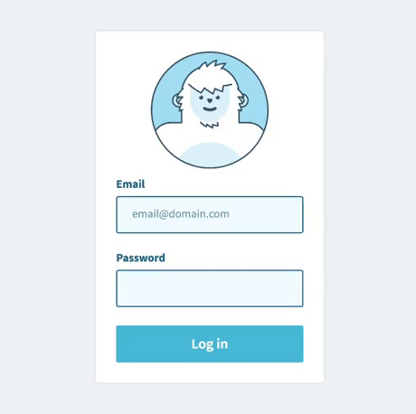
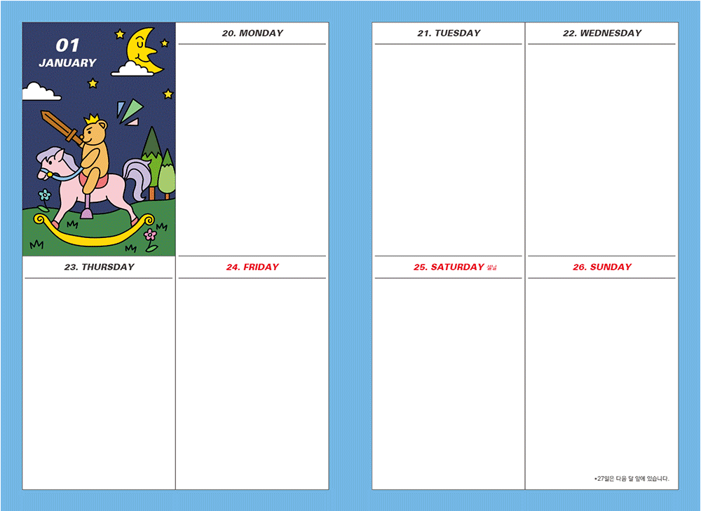
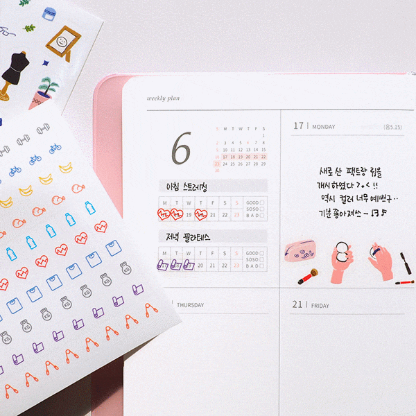

About the Service
MY DIARY 서비스는
기존의 종이 다이어리의 한계를 벗어나
웹 상에서
그대로 재현할 수 있는 서비스로
온라인 다이어리꾸미기 서비스 입니다.
기존의 서비스보다 쉽고 간단하게 서랍을 통해 스티커나 글꼴을 보관하고,
자동 썸네일, 손글씨, 다양한 속지등을 제공합니다.
How-To
1.회원가입
2.MENU > MY PAGE에서 다이어리 테마 선택


3.사진,스티커,폰트로 나만의 다꾸 완성
4.친구와 공유하기
